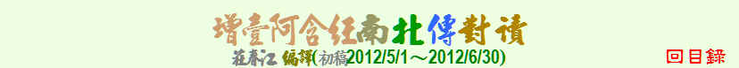

| 教理 | 觀念 | 生活 | 實踐 | 事蹟 | 譬喻 | 其它 |
| 由愛生 | 我與欲貪的關係 | 諸行無常 | 三結 |
| 導致再生的渴愛 | 識無住處 | 四聖諦 | 四法印 |
| 四種食物營養 | 諸行無常 | 無常苦空非我 | 生者必有死 |
| 諸法皆當離散 | 流轉與還滅 | 緣起法 | 六根的運作 |
| 不諍論 | 走到世界之邊 | 善法猶捨況惡法 | 生滅對治皆由空 |
| 非我非我所 | 不對白衣說的法 |
| 利養的可怕 | 心靈的沐浴 | 不要貪求物質 | 三種不飽足 |
| 福德為資糧 | 怨恨不息怨恨 | 布施的要領 | 不決勝敗 |
| 病人當做的 | 看護當做的 | 有關布施 | 六和敬 |
| 布施得福 | 八風也無常 | 探病 | 選擇依住處 |
| 不要為他人行惡 | 當老死來臨 | 不要怕作福 | 福德之源 |
| 四念住 | 身苦心不苦 | 精進超越彌勒 | 貪瞋癡的對治 |
| 從受著手 | 鬆緊適中 | 念佛法僧 | 三種三昧 |
| 臨終該做的 | 修無常想斷愛無明 | 對治淫慾 | 不放逸勝魔力 |
| 心如大地不厭嫌 | 逆順觀察緣起 | 守護與自制 | 身念處 |
| 凡夫與聖人的差別 | 涅槃以不放逸為食 | 修學資糧 | 修行次第 |
| 八大人念 | 八關齋戒 | 觀空三昧 | 從正行破邪見鏈 |
| 修學歷程 | 五戒部分受 | 先苦後樂 |
| 獼猴攀樹 | 染衣 | 驢子不會是牛 | 善惡人皆如月 |
| 從牛乳到醍醐 | 善調琴絃 | 如見帝釋旗幟 | 五取蘊為重擔 |
| 四種生熟芒果 | 生母與養母 | 如來出世如日出 | 大醫王 |
| 古仙人道 | 六種動物 | 晝度樹開花 | 水中的七種人 |
| 要塞堡壘 | 七覺支如七寶 | 如河流入海 | 漂流木 |
| 渡河的筏 | 驅牛群渡河 | 欲的譬喻 | 四念住如牧場 |
| 自制如裹傷 | 不善覺如蠅卵 | 抓蛇 | 孵雞蛋 |
| 寧壞六根 | 從樹皮到樹心 |